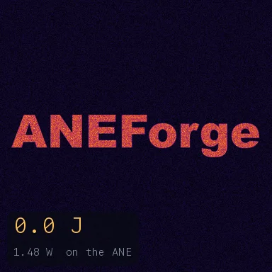
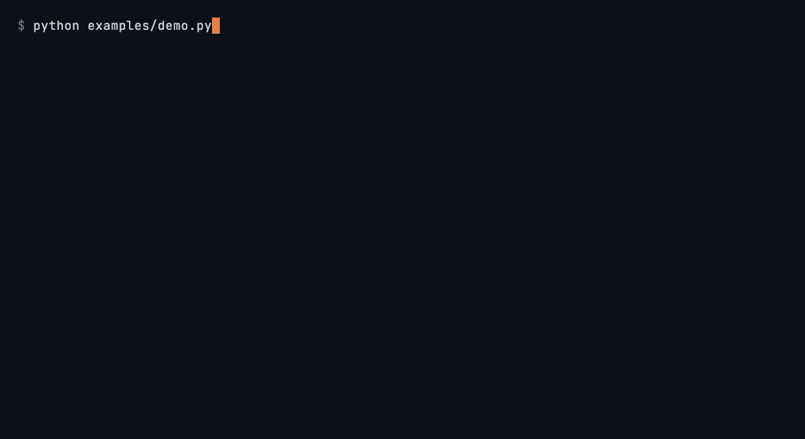

Fluid vorticity2-D incompressible Navier-Stokes: the word "ANEForge" is
painted as dye and wound into filaments. Every FFT in the 2,200-step pseudo-spectral loop runs on the ANE.

Reaction-diffusionA Gray-Scott system stepped on the engine — the
real-space companion to the fluid demo.

On-engine trainingA small char transformer trains end to end on the ANE
(forward + backward + Adam), then generates text one character per on-engine forward pass.
The Apple Neural Engine only exists on Apple Silicon, so these run on your own Mac
— pip install aneforge — not on this page.